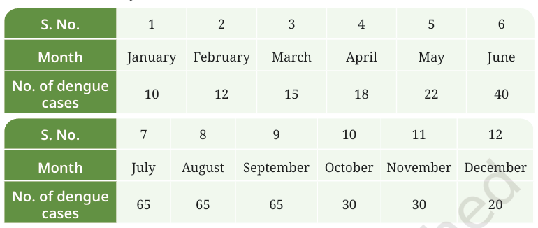

7. The following table contains information about the number of dengue cases reported in a hospital over a period of one year:
Make a bar graph of the number of cases on the Y-axis and
the month on the X-axis. Critically analyse your findings and
answer the following:

Bar Graph:

(i) In which three months were the dengue cases highest?
July, August, and September (65 cases each month)
(ii) In which month(s) were the cases lowest?
January (10 cases)
(iii) What natural or environmental factors during the peak months might contribute to the increase in dengue cases?
• Monsoon season creates stagnant water bodies
• High humidity favors mosquito breeding
• Waterlogging in urban areas
• Collection of rainwater in containers and coolers
• Increased mosquito population due to favorable conditions
• High humidity favors mosquito breeding
• Waterlogging in urban areas
• Collection of rainwater in containers and coolers
• Increased mosquito population due to favorable conditions
(iv) Suggest a few preventive steps that the community or government can take before the peak season to reduce the spread of dengue.
• Regular cleaning of water storage tanks
• Covering water containers properly
• Removing stagnant water from surroundings
• Fumigation in high-risk areas
• Public awareness campaigns
• Improving drainage systems
• Regular monitoring of mosquito breeding sites
• Covering water containers properly
• Removing stagnant water from surroundings
• Fumigation in high-risk areas
• Public awareness campaigns
• Improving drainage systems
• Regular monitoring of mosquito breeding sites